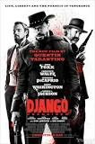
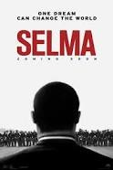
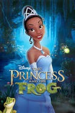
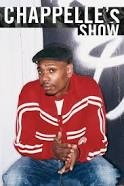
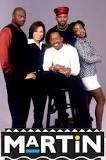
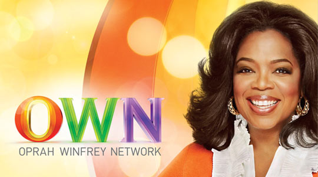

An epic tale spanning forty years in the life of Celie (Whoopi Goldberg), an African-American woman living in the South who survives incredible abuse and bigotry. After Celie's abusive father marries her off to the equally debasing "Mister" Albert Johnson (Danny Glover), things go from bad to worse, leaving Celie to find companionship anywhere she can. She perseveres, holding on to her dream of one day being reunited with her sister in Africa. Based on the novel by Alice Walker.
Glory Road:
After being appointed the new coach of the 1966 Texas Miners, Don Haskins (Josh Lucas) decides to build a team based on talent rather than race. The conservative townsfolk balk at the new racially diverse lineup despite the fact that the team is winning all their games. When black players like Bobby Joe Hill (Derek Luke) and team captain Harry Flournoy (Mehcad Brooks) begin to dominate the court with flashy moves, the racial tension increases, jeopardizing the future of the team.
12 Years a Slave:
In the years before the Civil War, Solomon Northup (Chiwetel Ejiofor), a free black man from upstate New York, is kidnapped and sold into slavery in the South. Subjected to the cruelty of one malevolent owner (Michael Fassbender), he also finds unexpected kindness from another, as he struggles continually to survive and maintain some of his dignity. Then in the 12th year of the disheartening ordeal, a chance meeting with an abolitionist from Canada changes Solomon's life forever.
Black Panther:
After the death of his father, T'Challa returns home to the African nation of Wakanda to take his rightful place as king. When a powerful enemy suddenly reappears, T'Challa's mettle as king -- and as Black Panther -- gets tested when he's drawn into a conflict that puts the fate of Wakanda and the entire world at risk. Faced with treachery and danger, the young king must rally his allies and release the full power of Black Panther to defeat his foes and secure the safety of his people.
Django Unchained:

Two years before the Civil War, Django (Jamie Foxx), a slave, finds himself accompanying an unorthodox German bounty hunter named Dr. King Schultz (Christoph Waltz) on a mission to capture the vicious Brittle brothers. Their mission successful, Schultz frees Django, and together they hunt the South's most-wanted criminals. Their travels take them to the infamous plantation of shady Calvin Candie (Leonardo DiCaprio), where Django's long-lost wife (Kerry Washington) is still a slave.
Selma:

Although the Civil Rights Act of 1964 legally desegregated the South, discrimination was still rampant in certain areas, making it very difficult for blacks to register to vote. In 1965, an Alabama city became the battleground in the fight for suffrage. Despite violent opposition, Dr. Martin Luther King Jr. (David Oyelowo) and his followers pressed forward on an epic march from Selma to Montgomery, and their efforts culminated in President Lyndon Johnson signing the Voting Rights Act of 1965.
The Princess and the Frog:

Hardworking and ambitious, Tiana (Anika Noni Rose) dreams of one day opening the finest restaurant in New Orleans. Her dream takes a slight detour when she meets Prince Naveen (Bruno Campos), who has been turned into an amphibian by evil Dr. Facilier. Mistaking her for a princess and hoping to break the spell, Naveen plants a kiss on poor Tiana -- thereby turning her into a frog as well. The pair hop along on an adventure through the bayous to seek the help of a powerful voodoo priestess.
TV
Chappelle's Show:

The sketch-comedy show, starring comic Dave Chappelle, follows the tried-and-true formula of similar shows that preceded it. Chappelle performs a stand-up routine that leads into a taped comedy sketch. The show usually ends with a musical performance. The show is often considered to be controversial due to its use of racial humor.
The Cosby Show:
"The Cosby Show" centers on the lives of the Huxtables: obstetrician Cliff and his lawyer wife Claire, their daughters Sondra, Denise, Vanessa and Rudy, and son Theo. Based on the standup comedy of Bill Cosby, the show focused on his observations of family life. Although based on comedy, the series also addresses some more serious topics, such as learning disabilities and teen pregnancy.
In Living Color:
This series provides a platform for the many members of the comedic Wayans family. Popular recurring sketches include Homey D. Clown, the Homeboy Shopping Network, Men on Film and Great Moments in Black History.
Sanford and Son:
Junk dealer Fred Sanford runs roughshod over his son and partner, Lamont, in a groundbreaking sitcom. Fred's moneymaking schemes routinely backfire, and he does just about anything to get out of working -- up to and including faking a heart attack. He's rude, sarcastic, outspoken, overtly prejudiced, and pretty darn nasty to his friends and family.
Martin:

Stand-up comedian Martin Lawrence drives this irreverent sitcom as a sexist, cocky and wisecracking radio station talk show host. His girlfriend and eventual wife, Gina, puts up with him -- although clashes do occur. Martin's friends, Tommy and Cole, help him get into trouble.
Amos and Andy:
Amos 'n' Andy is an American radio and television sitcom set in Harlem, Manhattan's historic black community
Channels
BET:
BET, created in 1979, is the first black owned TV network. It is the most prominent television network targeting African American audiences, with approximately 88,255,000 American households (75.8% of households with television) receiving the channel. ET's programming began with a wide scope of comedy, music, public affairs, and news programming including ComicView, Video Soul with Donnie Simpson, Video Vibrations, Softones, Screen Scene, Unreal/Planet Groove/Caribbean Rhythms, Jam Zone/Cita's World, Teen Summit, BET News with Ed Gordon, Lead Story, BET Tonight with Tavis Smiley, and BET Nightly News. Original programming currently seen on BET include The Quad, and Being Mary Jane. In addition, the channel broadcasts acquired television series, primarily in the form of sitcoms (such as The Parkers, Family Matters and Moesha), drama series (such as Scandal), and same-day or week-delayed late-night runs of syndicated talk shows (namely The Wendy Williams Show, The Real, and Dish Nation).
OWN:

The Oprah Winfrey Network (OWN), named after the former daytime talk-show host Oprah Winfrey, is an American television channel. It debuted on January 1, 2011, in approximately 80 million homes. In late 2012, Tyler Perry partnered with OWN to provide it with scripted television programming. One of Perry's series, The Haves and the Have Nots has consistently posted very successful ratings and has set a preeminent record on OWN, providing the network with its highest ratings to date.
TV One:
TV One launched on January 19, 2004, on Martin Luther King, Jr. Day, as a competitor to the longer-established Black Entertainment Television. TV One's programming targets African American adults with a broad mix of original lifestyle and entertainment-oriented series, documentaries, movies, concert performances and reruns of sitcoms from the 1970s through the 2000s.
Bounce TV:
The network was founded on April 5, 2011. Bounce TV features programming geared toward an African American audience that skews older than the demographic that its cable competitor BET primarily targets (adults between the ages of 25 and 54, compared to BET's target demographic of youths and adults ages 12 to 34). Bounce TV's programming primarily features a mix of acquired series and feature films. The network added its first acquired sitcoms in January 2015, when it acquired the rights to four series through deals with Warner Bros. Television Distribution, Carsey Warner Distribution, and 20th Television (The Parent 'Hood, Roc, A Different World, and The Hughleys).